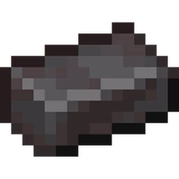

Netherite is Awesome
October 7, 2026 by Dominic Mullings
Netherite was introduced in the Nether Update in version 1.16 on June 23, 2020. This new ore was hard to find because it was at very low levels in the Nether and it can range from 1 to 3 of them at a time in a chuck (a chunck is a 16x16 block area). Netherite has the capacity to upgrade your armor and weapons to surpass there diamond counterparts.

In order to undergo the process of upgrading your equipment to netherite, you first must go into the Nether, dig down until you almost reached bedrock, mine straight until you hit ancient debris and break it (you need at least an iron pickaxe). Then collect atleast four ancient debris, put them into a furnace until you get 4 netherite scraps, go into a crafting table and combine it with 4 gold ingots and there you have it, you got yourself one netherite ingot. Now that you have the ingot, before you can combine it with any diamond equipment, you must go find a smithing template which can be found in bastion remnants. After that, go into a smithing table and from there put the netherite ingot, smithing template and your diamond equipment of choice and there you go. Netherite equipment takes longer to break, is better at there respective jobs and just looks cooler.